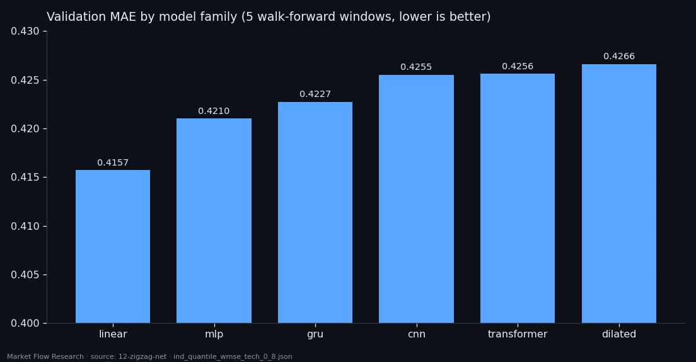
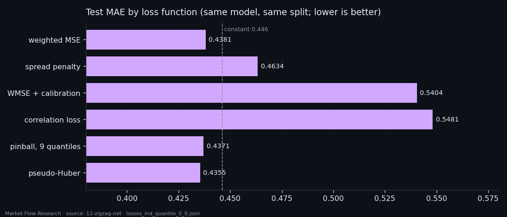
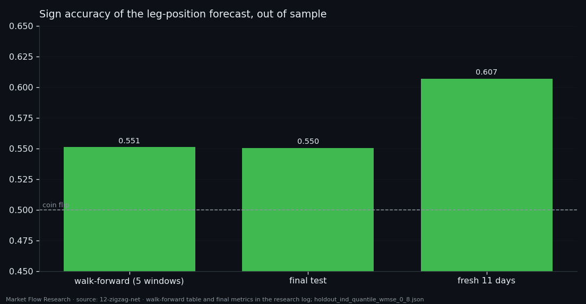

Six Networks Tried, the Winner Has 53 Parameters — Teaching a Model Where Price Sits in Its Leg
Correlations said the slow order book knows roughly where price sits inside its zigzag leg. So we trained networks to say it out loud: a number from −1 (at the low pivot) to +1 (at the high pivot), from four book features under thirteen averages. Six families on the same data, a time split with five walk-forward windows — and the linear model with 53 parameters won. On the final test it beats the constant for the first time (MAE 0.438 vs 0.446, sign 55.1%); on eleven fresh days outside the dataset, sign 60.7% on 44 legs. Small, consistent — and the reason is a loss that pays attention to the edges of the leg.
Full walkthrough — streamed from YouTube.
① A target that moves slowly, and a split that respects it
The target is the position of each event inside its zigzag leg: an independent 0.8% zigzag on event prices, the leg rescaled by rank to [−1, +1] and smoothed with a 10-event EMA on the leg (so the pivots stay put). Switching from a 0.8% zigzag on smoothed price to this one raised the number of legs from 110 to 684 — and legs, not events, are the independent units here, so the error bar on a sign rate fell from 4.8 to 1.9 points.
The inputs are four dimensionless book features (`balance`, `d_balance`, `vol_balance`, `price_balance`) each under 13 EMAs from 10 to 130 events: a 13 × 4 matrix per event, rescaled by quantiles fitted on train.
The first finding was a trap. The target changes slowly, so neighbouring events of one leg are nearly identical. Under a shuffled split, simply copying the target of the nearest training event gives a test MAE of 0.052 and 96.04% sign accuracy — with no model at all. So the split is by time: `train | val | test` in contiguous blocks with gaps cut at pivots (never closer than 130 events), repeated over five walk-forward windows, and test never takes part in any choice.

② Six families, same budget — the simplest wins
Six model families were compared on identical data and budget, each with default settings — families, not tunings. The metric is the mean validation MAE over the five windows.
The linear model (53 parameters) won with 0.4157; the MLP (5,505 parameters), GRU, transformer (26,017), CNN and dilated CNN all came in between 0.421 and 0.427. The gap between train and validation error grows with model size — a clean sign that the extra capacity learns the training weeks rather than the market.
The rest of the standard procedure then tuned only the winner: a coarse grid on learning rate (best 0.0001, at the edge, so the neighbourhood widened), patience of the early stop (30 epochs), and a moving neighbourhood search over learning rate and two loss weights that closed after three rounds at lr 0.0003, α 1, β 2. The grid always kept α = 0 — plain MSE — as a check that the weighting earns its place. It did: 0.4131 against 0.4145.

③ Weight the edges of the leg — and the model generalises
The weighted loss is `w = 1 + α·|y|^β`: an error at a pivot costs more than an error mid-leg. Under plain MSE almost all of the gradient came from the middle of the leg, where there is least signal; the weight moves attention to the edges, where there is some.
On the final split (train Feb–May, val late May–June, test 29 June–16 August; 10,033 test events, 112 legs) the effect is not a bolder output — the spread only goes from 0.34 to 0.36 of the target's — but a better one. Test MAE 0.4381 against 0.4461 for the constant, R² +0.0067 (plain MSE: −0.0519), Pearson 0.187 (MSE: 0.093), sign 55.05% (MSE: 52.58%). Across the five walk-forward windows the sign rate is 55.12% ± 1.50, better than the constant in 5 of 5.
We then tried five other ways to punish error. The three that force the output to have the target's spread (a spread penalty, post-calibration, a correlation loss) all make MAE worse and R² negative — calibration keeps Pearson at exactly 0.1873 while MAE gets 23% worse. Stretching the output is not the same as being right. Pseudo-Huber edged out the weighted MSE on all four test metrics (MAE 0.4355, sign 55.45%), but on validation the three point losses sit within 0.4% of each other — indistinguishable by the selection rule.

④ Eleven fresh days, and how much to believe it
The saved model and scaler were then run on raw data outside the dataset — 14 August 14:00 to 25 August 2026, rebuilt through the same chain of classes. On 2,512 events and 44 legs: MAE 0.387, R² 0.100, Pearson 0.344, sign 60.71%. Plain MSE on the same window: 59.63%, Pearson 0.279 — the weighted loss is better on all four numbers.
How much to believe it is a question of legs, not events. Across all five walk-forward windows there are 295 independent legs: a standard error of 2.9 points, and the 55% sign rate sits 1.76 SE above a coin. The fresh window alone is 1.43 SE. Neither number proves anything alone; what matters is that three independent looks — walk-forward, final test, fresh days — all land on the same side.
The ceiling is not in the loss. Every point loss leaves the output at about a third of the target's spread, because the underlying correlation is about 0.25. The next studies in this series move the target instead: a 2.3% leg, and a loss that rewards landing in the pivot zone.

Reproduce this study
- Research log (.md, Ukrainian): goal, data, plan, scripts, every confirmed stage and table — enough to rerun the study
- Reproduction kit (.zip): the study's scripts, project rules and base scripts that build every class
If this changed how you read the tape, the natural next step is Volume Is the Fuel — Not the Steering Wheel — We recorded the Binance order book every second for six coins over five months and ran eighteen tests on what volume really does.
Volume Is the Fuel — Not the Steering Wheel
We recorded the Binance order book every second for six coins over five months and ran eighteen tests on what volume really does.
About Market Research Lab — What We Collect and Why
Most market commentary is storytelling.
From Calm to Calm: a Standard for What Counts as a Signal (BTC)
We stopped defining market signals with a stopwatch.
The Wall That Goes Quiet: What Resting Liquidity Predicts
We measured resting limit liquidity sitting on both sides of the book second by second across six coins, and asked the only question that matters:….
Comments
Discussion is powered by GitHub. Enable it by adding secrets/giscus.json (repo IDs from giscus.app).